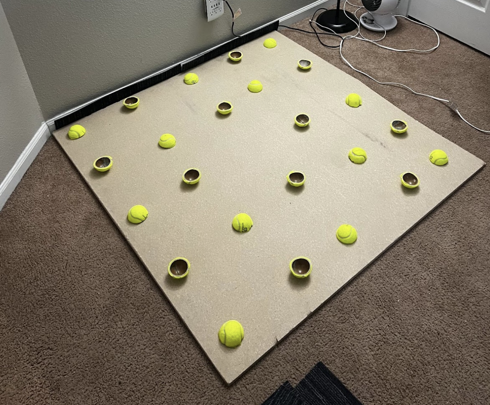

DRUM RISER
SOUND DAMPING PLATFORM FOR E-DRUMS

Overview
I built a custom drum riser to dampen sound, limit vibrations, and provide a stable platform for my electronic drum kit. The platform is constructed from plywood panels supported by strategically spaced tennis balls, which act as isolation mounts to decouple vibrations from the floor.
The entire project came in under $50, including the carpet I layered on top for grip and aesthetics. It dramatically reduced how much the kit rattles the room and keeps the kit exactly where I want it.
